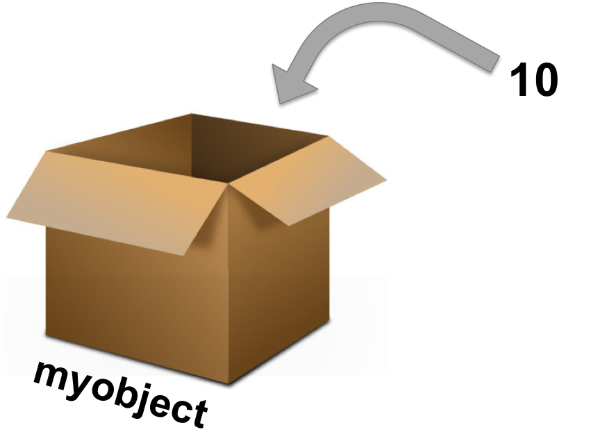
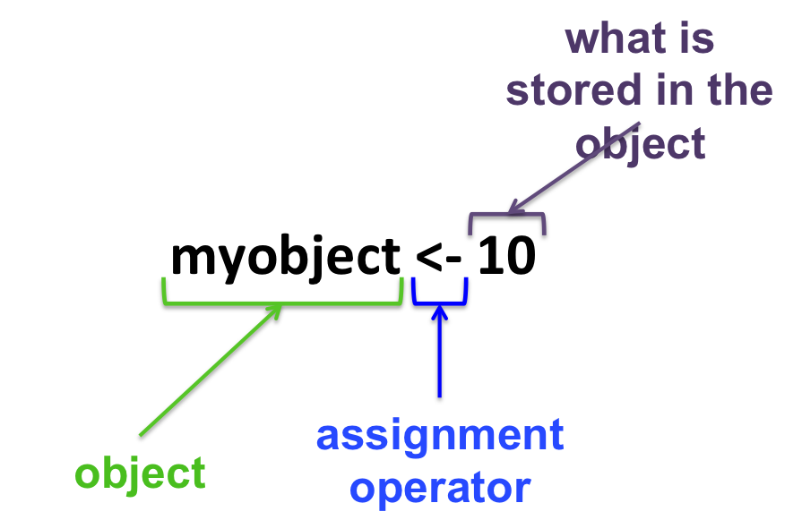

Chapter 5 R basics
5.1 Arithmetic operators
| Operator | Function |
|---|---|
| + | addition |
| - | subtraction |
| / | division |
| * | multiplication |
| ^ or ** | exponential |
In the R terminal:
10 - 2## [1] 8Type Enter for R to interpret the command.
5.2 Simple calculations
Given the following table:
| type of RNA | Total |
|---|---|
| mRNA | 329 |
| miRNA | 45 |
| snoRNA | 12 |
| lncRNA | 28 |
Calculate the total number of RNAs reported in the table:
329 + 45 + 12 + 28## [1] 414What is the percentage of miRNA?
( 45 / 414 ) * 100## [1] 10.869575.3 Objects in R
Everything that stores any kind of data in R is an object: 
R syntax

Assignment operators
- <- or =
- Essentially the same but, to avoid confusions:
- Use <- for assignments
- Keep = for functions arguments
5.4 Assigning data to an object
Assigning a value to the object B: B <- 10
Reassigning: modifying the content of an object:
B + 10## [1] 30B unchanged !!
B <- B + 10B changed !!
- You can see the objects you created in the upper right panel in RStudio: the environment.